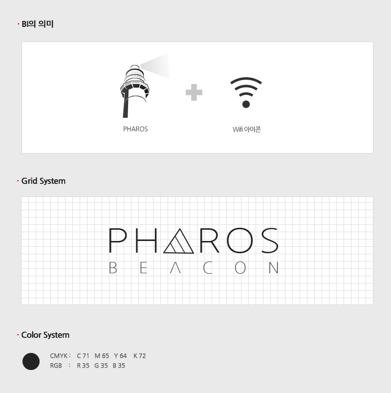

BI Design
파로스 비콘
(PHAROS BEACON)
세계 7대 불가사의 '파로스' 등대
비콘 주변이라면 등대의 밝은 불길처럼 어디서든 고객의 위치를 찾고 반사경의 화력처럼 방문자와 가맹점 정보를 정확하게 전달할 수 있다는 점의 PHAROS와 Wifi 의 공통점을 PHAROS의 스펠링 A을 와이파이 아이콘의 변형 형태로 표시.

Prev
View All
Next